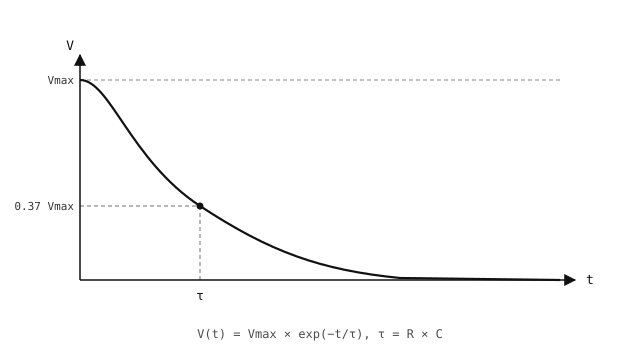
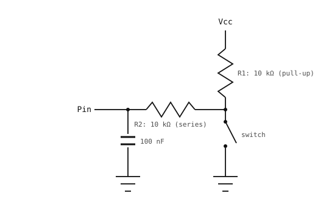

3.11. 消抖¶
开关在原理图上被画成一个理想的断开或闭合触点，但真实开关的触点并不会在两种状态之间干净利落地切换。它们会抖动——在稳定下来之前的几毫秒内多次接通和断开电气连接。读取该引脚的 GPIO 输入会把这看作一连串边沿；草率的轮询循环会把一次真实的按下计成多次“按压”，而中断处理函数也会在每次实际按下时运行好几遍。

抖动的开关在稳定之前会产生一连串快速跳变。¶
消抖就是过滤掉这种抖动，使每一次物理按压只登记为一个事件的做法。有两种方法可以解决这个问题——软件（固件中的一条计时规则）或硬件（导线上的一个小型滤波器）。两者并不互斥。
3.11.1. 软件消抖¶
其思路是记住输入上次变化的时刻，并拒绝在该时间戳之后的一小段时间窗口内发生的进一步变化。触点抖动通常持续不到 10 ms；一次真实的按压需要 50 -- 100 ms；一个 30 -- 50 ms 的窗口既能捕获所有抖动，又不会屏蔽真实的按压。
在轮询循环中，读取引脚，与上一次的稳定值比较，仅在消抖窗口过去之后才接受变化：
import time
from machine import Pin
button = Pin("P0", Pin.IN, Pin.PULL_UP)
last_state = 1
last_change = 0
DEBOUNCE_MS = 50
while True:
now = time.ticks_ms()
state = button.value()
if state != last_state and time.ticks_diff(now, last_change) > DEBOUNCE_MS:
last_change = now
last_state = state
if state == 0:
do_action()
time.sleep_ms(10)
对于中断驱动的读取，在处理函数内部应用同样的计时规则，然后通过 micropython.schedule() 把真实的按压交回主上下文（参见 GPIO 输入）：
import time
import micropython
from machine import Pin
button = Pin("P0", Pin.IN, Pin.PULL_UP)
last_irq = 0
DEBOUNCE_MS = 50
def handle_press(pin):
do_action()
def on_press(pin):
global last_irq
now = time.ticks_ms()
if time.ticks_diff(now, last_irq) < DEBOUNCE_MS:
return
last_irq = now
micropython.schedule(handle_press, pin)
button.irq(handler=on_press, trigger=Pin.IRQ_FALLING)
ISR 按时间戳过滤抖动并将回调入队；handle_press 在主上下文中运行，那里进行内存分配和慢速 I/O 都是安全的。
3.11.2. 硬件消抖¶
硬件消抖在电气层面过滤抖动，在它到达引脚之前就将其滤除。标准的工具是一个电容。
电容是一种双端元件，用于储存电荷。从物理结构上看，它是两块相隔很近的导电极板，中间由一层绝缘体（电介质）隔开。

一个平行板电容：两个导体由一层绝缘层隔开。¶
在端子两端施加电压会把等量且符号相反的电荷驱动到两块极板上；其关系为
Q = C × V
其中 Q 是储存的电荷（库仑），V 是电容两端的电压，C 是它的电容量（法拉）。电容量由器件的构造决定；电容量越大，意味着在相同电压下储存的电荷越多。
由此带来的结果是：电容无法瞬间改变它的电压。流入或流出的电荷必须经过路径中的电阻，而该电阻决定了电压变化的快慢。
3.11.2.1. RC 时间常数¶
通过电阻给电容充电会产生一条朝向电源电压平滑上升的指数曲线，而不是一个阶跃。这条上升曲线的特征时间就是 RC 时间常数：
τ = R × C
经过一个 τ 之后，电容达到电源电压的约 63 %。经过 5 个 τ 之后，它超过 99 %——实际意义上的“充满电”。

电容沿着指数曲线充电。τ = RC 是达到最终电压 63 % 所需的时间。¶
通过电阻放电则遵循镜像过程：电压从初始值朝零指数下降，经过一个 τ 后降至起始电压的 37 %，经过 5 个 τ 后降至 1 % 以下。

电容沿着指数衰减曲线放电。τ = RC 是降至起始电压 37 % 所需的时间。¶
3.11.2.2. 消抖电路¶
在输入引脚和地之间接一个电容，并通过一个串联电阻为其供电，就构成了一个低通滤波器。快速的尖峰来不及通过该电阻给电容充电或放电；引脚保持在尖峰出现之前所处的电压附近。缓慢的变化——一次有意的按压——会给电容充电或放电，于是读数随之变化。
R1 把开关的高端上拉至 Vcc，产生一个会抖动的原始开关信号。R2 和 C 随后把该信号低通滤波后送入引脚：

硬件消抖：R2 和 C 在原始开关信号到达引脚之前对其进行低通滤波。¶
典型取值：R1 = 10 kΩ（上拉），R2 = 10 kΩ（串联），C = 100 nF。
当开关断开时，电流流经 Vcc → R1 → R2 → 电容（串联），以 τ_charge = (R1 + R2) × C = 2 ms 的时间常数把电容充电到 Vcc。
当开关闭合时，开关节点被钳位到地，电容仅通过 R2 向该地放电，时间常数为 τ_discharge = R2 × C = 1 ms。
两个边沿都经过了 RC 滤波。由于电容位于它自己的节点上，处于开关与 R2 之后的下游，它能在 Vcc（断开）和 0 V（闭合）之间干净地摆动——在两种稳态情况下都没有电流需要流经 R1。
3.11.3. 如何在两者之间取舍¶
软件是默认选择。它不需要任何元器件成本，阈值容易调节，并且适用于 CPU 能读取的任何引脚。
硬件在抖动会到达 CPU 轮询代码以外的某处时才值得增加这些元件——比如绝不能重复触发的中断、硬件计数器，或本身没有滤波功能的外设。
软件消抖和硬件消抖也能和平共存：一个小型 RC 滤波器抑制最严重的尖峰，而一个软件消抖窗口处理剩下的部分。